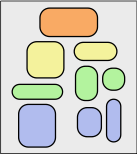

The Nested Blocks and Guidelines Model

Venue. Information Visualization (2013)
Authors. Miriah Meyer, Michael Sedlmair, P Samuel Quinan, Tamara Munzner
Abstract. We propose the nested blocks and guidelines model for the design and validation of visualization systems. The nested blocks and guidelines model extends the previously proposed four-level nested model by adding finer grained structure within each level, providing explicit mechanisms to capture and discuss design decision rationale. Blocks are the outcomes of the design process at a specific level, and guidelines discuss relationships between these blocks. Blocks at the algorithm and technique levels describe design choices, as do data blocks at the abstraction level, whereas task abstraction blocks and domain situation blocks are identified as the outcome of the designer’s understanding of the requirements. In the nested blocks and guidelines model, there are two types of guidelines: within-level guidelines provide comparisons for blocks within the same level, while between-level guidelines provide mappings between adjacent levels of design. We analyze several recent articles using the nested blocks and guidelines model to provide concrete examples of how a researcher can use blocks and guidelines to describe and evaluate visualization research. We also discuss the nested blocks and guidelines model with respect to other design models to clarify its role in visualization design. Using the nested blocks and guidelines model, we pinpoint two implications for visualization evaluation. First, comparison of blocks at the domain level must occur implicitly downstream at the abstraction level; second, comparison between blocks must take into account both upstream assumptions and downstream requirements. Finally, we use the model to analyze two open problems: the need for mid-level task taxonomies to fill in the task blocks at the abstraction level and the need for more guidelines mapping between the algorithm and technique levels.